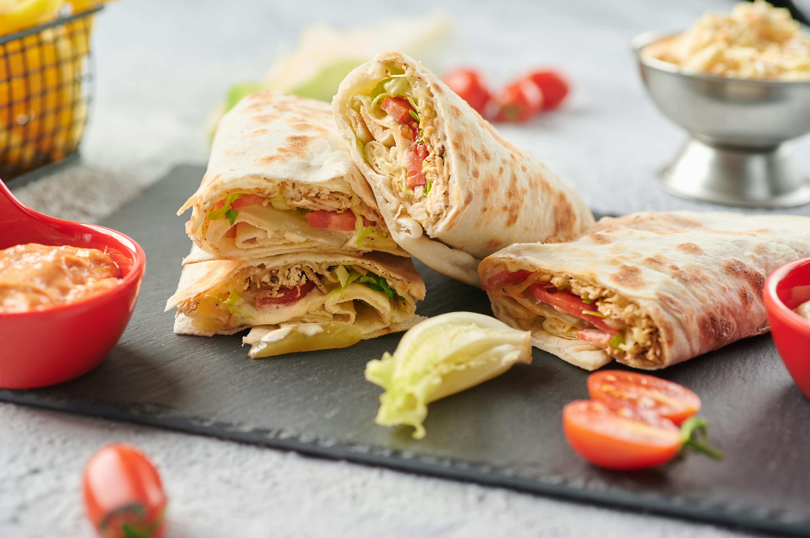

Home
Chicken Shawarma

Description
Chicken Shawarma is a popular Middle Eastern street food known for its
bold flavors and juicy, spiced meat. Traditionally cooked on a vertical
spit, this home-friendly version uses marinated chicken grilled or
pan-seared to perfection.
Served wrapped in warm pita bread with fresh vegetables and creamy garlic
or tahini sauce, shawarma is a flavorful, satisfying meal perfect for
lunch, dinner, or even a party platter. Its aromatic blend of spices will
transport your taste buds straight to the Middle East.
Ingredients
- 500g boneless chicken thighs or breasts
- 2 tbsp plain yogurt
- 2 tbsp olive oil
- 1 tbsp lemon juice
- 3 garlic cloves, minced
- 1 tsp ground cumin
- 1 tsp paprika
- 1 tsp ground coriander
- ½ tsp ground turmeric
- ½ tsp cinnamon
- Salt and pepper, to taste
- Pita bread or flatbread
- Sliced tomatoes, cucumbers, onions, and lettuce
- Garlic sauce or tahini sauce
Steps
-
In a bowl, mix yogurt, olive oil, lemon juice, garlic, and all the
spices. Add the chicken and coat well. Cover and marinate in the fridge
for at least 1 hour (overnight for best flavor).
-
Heat a grill or skillet over medium-high heat. Cook the marinated
chicken for 5–7 minutes per side until fully cooked and slightly
charred.
- Let the chicken rest for a few minutes, then slice it thinly.
-
Warm pita or flatbread. Add chicken slices, fresh vegetables, and your
preferred sauce.
- Roll up the shawarma and serve warm!